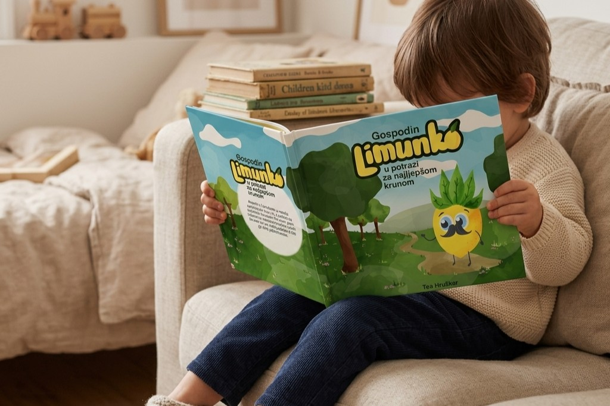
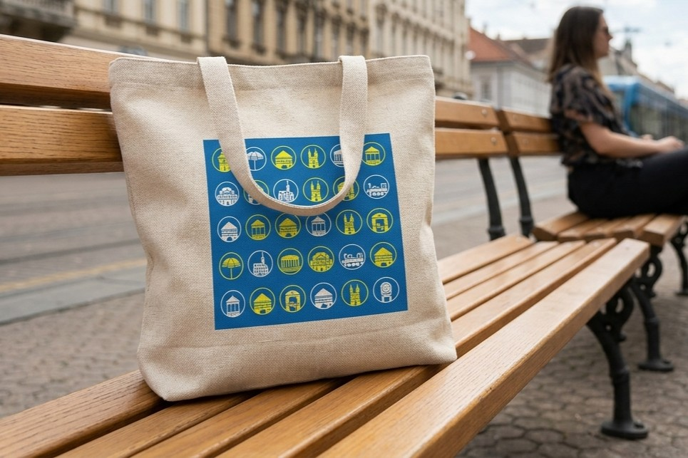
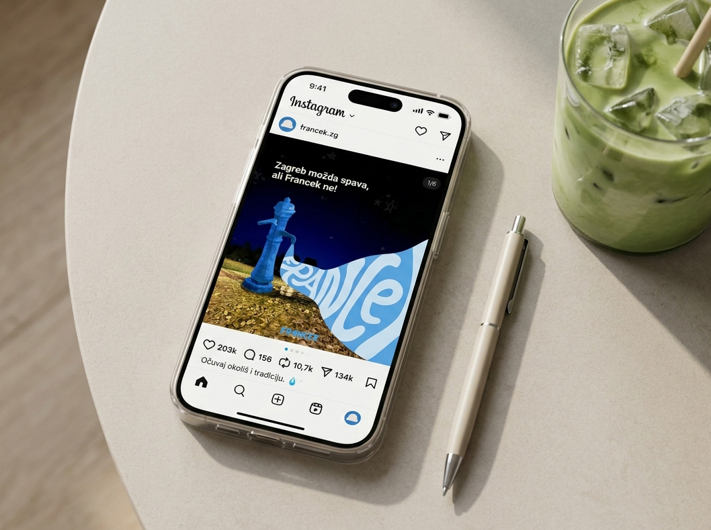

moje ime je Tea Hruškar,
studentica sam grafičkog dizajna
ilustracija · tipografija · vizualni identitet · editorial dizajn
dizajn.
PROJEKTI:
Gospodin Limunko u
potrazi za najljepšom
krunom
dječja slikovnica
kvadratni format
OPSEG RADA:
koncept, tekst, ilustracija,
priprema za tisak
2026.

Autorska slikovnica samostalno napisana, ilustrirana i oblikovana kao cjelovit vizualni i narativni projekt.
Kroz priču i ilustracije povezuje elemente učenja, prepoznavanja emocija i istraživanja svijeta na dječji prirodan i zaigran način. Projekt obuhvaća razvoj likova, ilustraciju svih stranica, oblikovanje naslovnice te prijelom i pripremu knjige za tisak u kvadratnom formatu 20 × 20 cm.
pogledaj više >>
Grad u znakovima
sustav piktograma
11 lokacija
zagrebačkog centra
OPSEG RADA:
ilustracija, vektorska
razrada, kreiranje
fonta, sustav boja
2025.

Serija od jedanaest piktograma inspirirana je prepoznatljivim lokacijama zagrebačkog centra: od Dolca i Kamenitih vrata do Katedrale, HNK-a i uspinjače.
Svaka je lokacija svedena na jednostavne geometrijske oblike unutar kružnog okvira, kako bi znakovi ostali dosljedni, jasni i čitljivi u različitim veličinama. Uz završni sustav razvila sam i kolor-varijante te primjenu piktograma na turističkim putokazima i promotivnim materijalima.
pogledaj više >>
Francek
Vizualni identitet i kampanja
autorski projekt
OPSEG RADA:
koncept, ilustracija,
oblikovanje
2026.

Francek je vizualni identitet i promotivna kampanja posvećena zagrebačkim javnim česmama s pitkom vodom. Projekt polazi od problema zagađenja jednokratnom plastičnom ambalažom te potiče korištenje višekratnih boca i dostupne pitke vode iz gradskih česmi.
Kroz ilustraciju, tipografiju, digitalne objave i plakate kampanja Franceke predstavlja kao prepoznatljiv dio zagrebačkog prostora. Cilj je potaknuti korištenje višekratnih boca i podsjetiti da tradicija javne vode može biti dio suvremene gradske svakodnevice.
pogledaj više >>